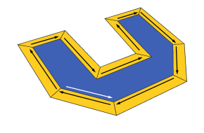
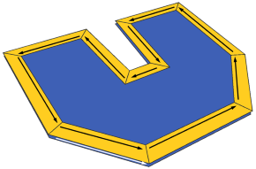

offset
Synopsis
offset(offsetDistance)
offset(offsetDistance, offsetSelector)
Parameters
- offsetDistance (float)
Offset distance, negative or positive - offsetSelector (selstring)
(all | inside | border) - selects which faces to keep. all is default.
The offset operation constructs offset polygons at distance offsetDistance for each face of the current shape's geometry. Depending on the sign of the parameter, offset polygons are constructed in the interior (negative sign) or in the exterior (positive sign), respectively.
The resulting shape contains both the offset polygons and the border faces (that is the difference between the original faces and the offset polygons). If only the offset polygons are needed, the corresponding faces can simply be extracted by using a component split (see examples below).
Scope
The scope's size is adapted to the new geometry.Related
- extrude operation
- innerRect operation
- roofGable operation
- roofHip operation
- roofPyramid operation
- roofShed operation
- taper operation
Examples
Offset Polygons and Border Faces
The following illustration lists offset polygons (red) and border faces (green) in both the interior and exterior case.
The original polygon (in the middle) is downsized (negative offsets) and enlarged (positive offsets). Offset polygons are colored in red, border faces are in green. Note that in the case of enlarging, offset polygons and the border faces overlap.
attr red = "#FF0000"
attr green = "#00FF00"
Lot --> offset(-3) A
A --> comp(f) { inside: I | border: O }
I --> color(red)
O --> color(green)
with offset between -3 and 3.
To extract the offset polygons, the inside selector is used for the component split. In the exterior case, this might be confusing, since offset polygons are actually outside in this case.
When using positive offsets, border faces (green) and offset polygons (red) overlap. In this case the normals of the border faces point down (see below).
Face Orientation
In the following illustration for each face, the first edge is marked. | In the interior case (offset = -1), both the inside and the border faces are oriented counter-clockwise (positive). |
 | In the exterior case (offset = 1), only the red face is oriented counter-clockwise. The green border faces are clockwise (negative). |
Since the border faces are negative in the exterior case, the following boolean equation holds in both cases: Inside faces + Border faces = Original Face.
Copyright ©2008-2015 Esri R&D Center Zurich. All rights reserved.